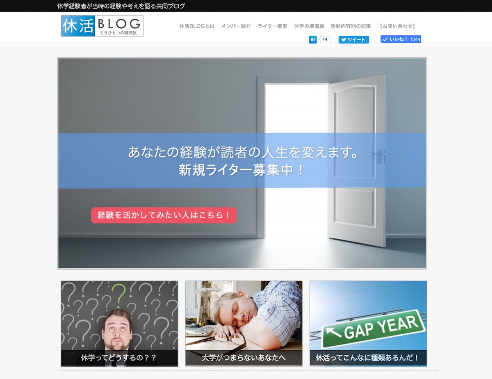

休学すると就活に悪影響なの？2014年卒の就活生が思ったこと。
※この記事がきっかけで休活BLOGのリリースに繋がりました。
休学するときに、周りから言われたこと、、、
「就職で不利になるよ」
でも一度決意するとゆるがないタイプなので、
一応耳は傾けるけど、意思決定には影響しませんでした。
記事のながれ
- 休学すると就活に不利なの？
- 休学に悩んでる学生がおおい
- 意思決定するコツ、みたいな話
１．休学すると就活に不利なの？
{kind=link}
【結果】：影響なし(*･｡･)ﾉ
実感ベースで80%の面接官は気付いてすらいませんでした笑
でも、たまに面接で聞かれました。
面接官A「あれ、留年してるの？」
面接官B「あれ、今って何年生？」
僕「1年休学してフィリピン行ってました。」
このやりとりで終了。
※フィリピン留学に関しては、かなり聞かれる。
②休学に悩んでる学生がおおい
最近、休学に悩む学生によく会うのですが、言いたいことは一つだけ。
「休学したいなら休学すべき」
この先の人生は長いんだから、1年の休学くらい問題ないかと。休学してからやること考えるのもいいと思います。
ちなみにぼくは休学期間のうち、2ヶ月くらいはニートしてました笑
ニート最高です！
③休学の意思決定するコツ
そうは言われても、人によっては休学って大きな決断ですよねー。
休学するとなにが起こるか？
1、大学で友達いない
2、ゼミとかで若干うく
3、テスト前に友達がいないから焦る
↑みたいなことがおこります。（たいしたことは起こらない）
「でもどうしよう…。まよう…。」ってときの解決方法。
答え：学生の休学者数を考える
休学者は推定6万人
※算出方法（かなり適当）
大学生：約600万人（適当にぐぐった）
休学率：1%（ぼくの学科は100人いて、休学したのは自分だけだから）
6万人も休学してるなら、自分も大丈夫かな、という思考です。
ぼくはなにかするときに結構、こうゆう数字で自分を納得させてます。
以上ですー。
休学迷ってる人がいましたら是非休活BLOGをご覧ください。

» 休活BLOG｜休学経験者が当時の経験や考えを語る「共同ブログ」です。
P.S：普段の僕は「Twitter」を軸に発信しています。また最近は「Webマーケ教材」の作成に注力しており、ネットで稼ぐスキルを学べます。ブログの更新通知は「メルマガ」から送っています。スパムは送りません。更新通知だけ送ります。